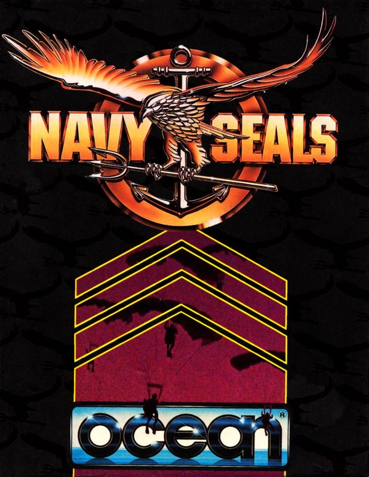
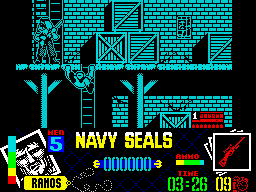

Navy Seals


{kind=link}

| Publisher: | Ocean |
| Price: | £10.99 / £15.99 |
| Year: | 1991 |
| Source: | CRASH, Issue 84 |

The ‘Navy SEALS’ movie isn’t out until February, but Ocean’s game-of-the-film is already complete! How’s that for efficiency?! The Navy SEALS is special commando unit of the US Navy. One of their helicopters has been shot down over the Gulf and the pilots captured by a bunch of Arab nutters. A team of five Navy SEALS commandos storm their HQ to rescue their chums and destroy the Arab’s collection of lethal Stinger missiles.

There are two different missions in the game, each loaded separately, and you can play whichever you want without solving the other. Mission one’s a platform/combat/strategy game (there’s a mix — Ed) and mission two is basically Renegade with guns.
Mission one, with five levels, begins as the squad of five SEALS sneak into Oman harbour. You control each of the five SEALS one at a time, so you’ve got five lives.
Each level is big, or maybe it just seems like it because the graphics are so huge. And you can’t just go running around, guns ablaze, hoping to take out the guards before they see you in this maze of crates, platforms, buildings and tunnels. I did that and lost all five SEALS in about 20 seconds! You need to be brainy, planning your moves as you go. It all seems impossibly difficult to begin with but with every go you get a little bit further. When you know the best attack plans you’ll whisk through it! It’s just like organising a real tactical raid!
The detailed scenery scrolls multi-directionally as you move about and all the SEALS are very agile. You can run and jump to the left or right, leap up, grab a girder and swing along, crouch, crawl and most importantly shoot! Actually, shooting is a real pain as you can only point your gun to the left or right. It would have been better if you could swing your gun around like in Midnight Resistance.
Arab opponents are all over the place and the second they spot you they open fire. You can retaliate with your handgun and later, as you discover weapon crates, flame throwers, machine guns and more!
The objective on each of the levels is to locate the Stinger missile cases, place a time bomb on each and then escape before the whole place gets blown to bits. The action gets increasingly more difficult as you go up the levels, though the actual gameplay remains the same.
Mission two is a much simpler game and is almost relaxing after the complexity of level one. It’s played on the streets of Beirut and you have to find your way, with the help of a map and a few useful tip-offs, to the Arabs’ store of Stinger missiles. The scenery scrolls horizontally as you move through streets swarming with Arabs. The nearer you get to the Stinger store, the more attackers there are about. After shooting down a wave of opponents prepare for some heavy-duty combat as the Arabs ride in on armoured vehicles. It’s all simple violence and not too straining on the brain, as long as you follow the map correctly!
Navy SEALS is one of Ocean’s 128K only products and it shows. It’s incredibly well presented and really makes use of the 128K’s power. There’s none of the corner cutting there’d be if it had to be chopped into multiloads for a 48K Speccy. Graphics are very colourful, detailed but always clear, and colour is effectively used throughout level one. Animation of the characters is simply brilliant, the SEALS and Arabs perform all their movements well and surprisingly quickly considering their huge size! Mission two is the more immediately playable of the two but in the end it’s mission one’s five complex levels that’ll keep you enthralled!
RICHARD — 94%
Oozing quality, Navy SEALS is one of the most well designed, programmed and produced products of the year. It’s tough to begin with, but make a map, plan your movements and you’ll be well away. Graphics are superb and there are loads of really neat touches to the animation in mission one: the scenery normally scrolls smoothly around you, but when you climb a ladder it scrolls in chunky steps with every rung you climb, and there’s the devastating missile launcher weapon — fire that and the whole screen is clouded in a red and yellow explosion! Navy SEALS is excellent value too, you really are getting two very different games: the strategic mission one and the very playable stroll down Hell highway in mission two. In fact, it’s a bit of a landmark in Speccy gaming!
OLI — 93%
RATING
A brilliant game, stunning in every aspect — a landmark!
| Presentation: | 95% |
| Graphics: | 94% |
| Sound: | 92% |
| Playability: | 91% |
| Addictivity: | 93% |
| Overall: | 94% |